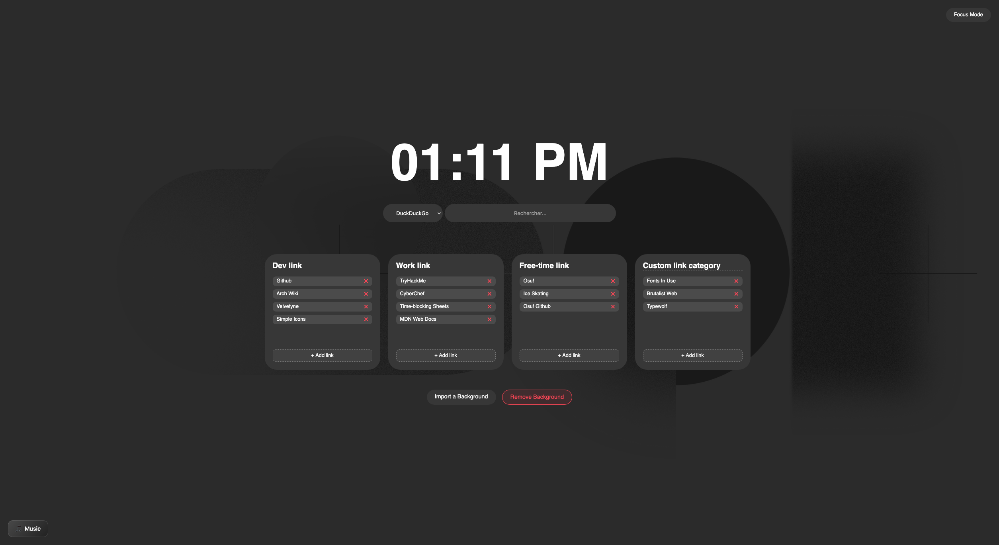
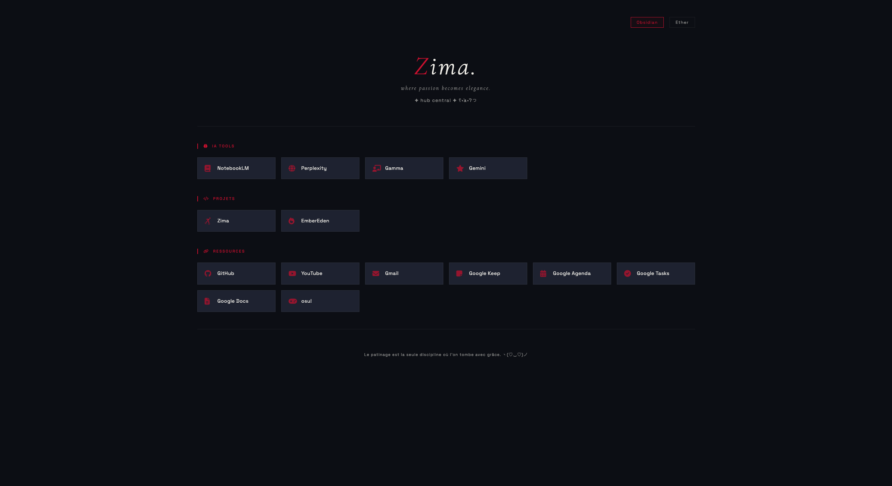
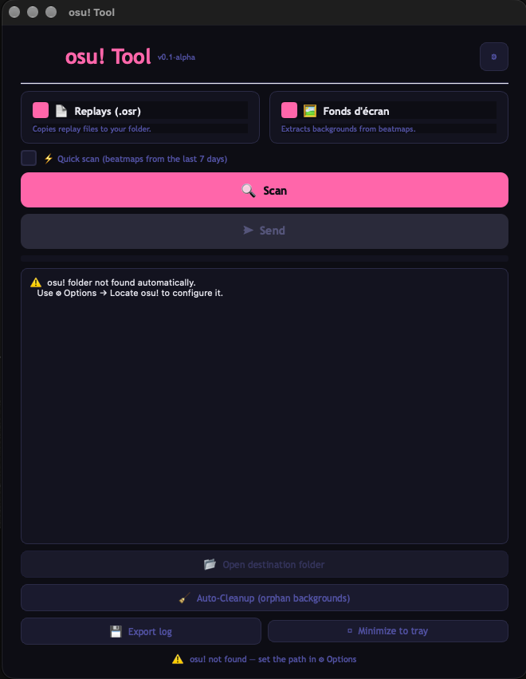
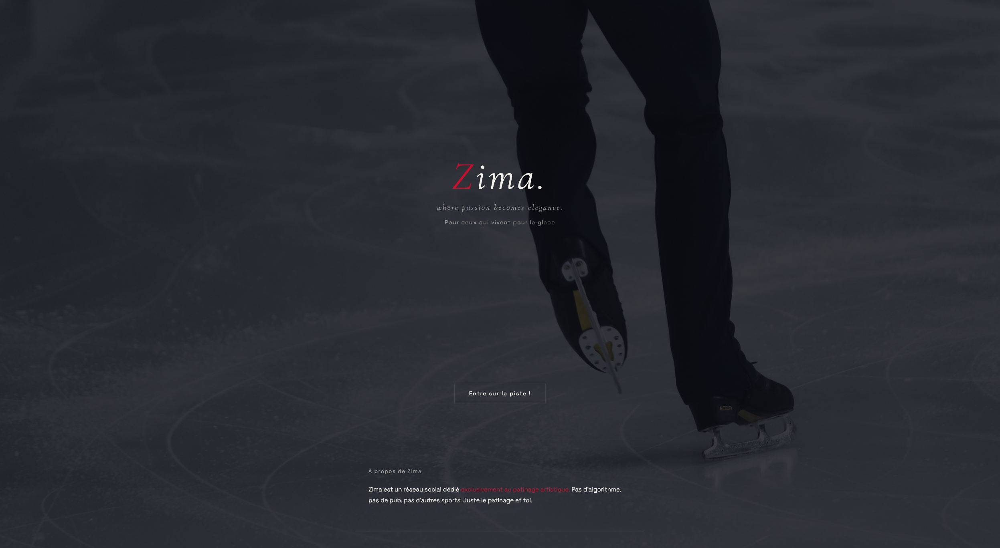

Dashboard
HTML / CSS / JSA dashboard to keep all your links accessible much faster.
Archived / No more updates
Dashboard / WebComputer Science Student. I write code for school and for experience, and I'm moving into cybersecurity.
A selection from my GitHub

A dashboard to keep all your links accessible much faster.
Archived / No more updates
Dashboard / Web
A dashboard to keep all your links accessible much faster.
Archived / No more updates
Dashboard / WebA mockup for a social media platform dedicated to volleyball.
Dead
Social Media / Web
An app to extract and transfer replays and background images from osu! beatmaps (Windows only).
Inactive, but an update is coming
App
An algorithm-free social media platform similar to Instagram, made for ice skating.
On hold for now
Social Media / WebSystem capabilities, stack and current learning paths.
I'm Misha, a computer science student. I started coding for school and for experience, and I began with vibe-coding.
Then I realized it wasn't my work, it wasn't me, so I stopped and learned to write and understand the code myself. I still use AI as a tool, but I want to know why the code works.
While reading about IT, I kept running into cybersecurity. I watched more and more about it, and decided that's where I want to go.
My first computer experience was games: Counter-Strike, Minecraft and World of Warcraft. That curiosity is still what drives me.
Always available for talking